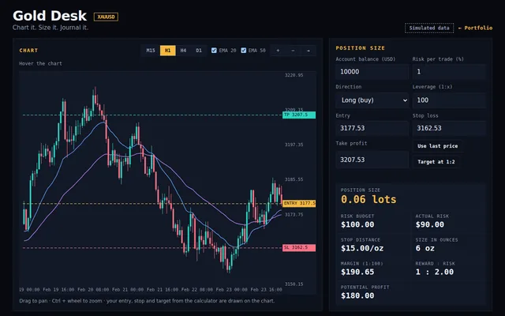

// تهران · توسعهدهندهٔ فرانتاند
CHARON
وبسایتهایی با دقت مهندسی؛ دستنویس و بدون حرکت اضافه.
حرکت بده · کلیک کن · بشکنش
[ 01 ] درباره
به نام قایقران.
در اسطوره، خارون مسافران را از رودخانه عبور میدهد. من همین کار را با ایدهها میکنم: از طرح اولیه تا وبسایت زنده.
هر خط کد من دستی نوشته شده. بدون صفحهساز، بدون قالب کپیشده. فقط HTML، CSS و جاوااسکریپت، تا وقتی که حسش درست شود.
۲۴ سالهام، ساکن تهران؛ کاردانی برنامهنویسی دارم و کارشناسی مهندسی کامپیوتر میخوانم. از C# و SQL شروع کردم، مدتی میکروکنترلر ARM برنامهنویسی کردم و در نهایت فرانتاند را انتخاب کردم. بیرون از کیبورد بازارها را دنبال میکنم، برای همین به داده، زمانبندی و ریسک فکر میکنم.
شهرتهران
سن۲۴
تحصیلاتکارشناسی مهندسی کامپیوتر (در حال تحصیل)
تمرکزفرانتاند
[ 02 ] مهارتها
جعبهابزار.
روی کارتها نشانگر ببر یا لمسشان کن.
HTML5ساختار معنایی و در دسترس
CSS3گرید، فلکسباکس، انیمیشن
JavaScriptDOM، رویدادها، state و منطق
Responsive designیک چیدمان که روی هر صفحهای کار میکند
SEO fundamentalsساختاری که موتور جستوجو میفهمد
C# & ASP.NET MVCمنطق بکاند و برنامههای وب
SQL Serverپایگاه داده، کوئری و مدلسازی داده
Git / GitHubکنترل نسخه و انتشار
ARM microcontrollersبرنامهنویسی embedded و الکترونیک
[ 03 ] ترمینال
با من حرف بزن.
یک ترمینال واقعی. دستور بنویس یا روی دکمهها بزن.
[ 04 ] نمونهکارها
پروژههای منتخب.
پروژههای واقعی؛ هرکدام با دمو و کد منبع.
[ 05 ] مسیر
مسیر، تا امروز و پیش رو.
آنچه انجام دادهام و جایی که میروم.
پایههای برنامهنویسی
دورههای C#، WinForms و WPF، SQL Server و برنامهنویسی وب سمت کلاینت در مجتمع فنی تهران.
الکترونیک و میکروکنترلر ARM
کارآموزی الکترونیک در یک شرکت دانشبنیان در تهران و برنامهنویسی میکروکنترلرهای ARM.
کاردانی برنامهنویسی کامپیوتر
پایهٔ رسمی برنامهنویسی، پیش از ورود به مقطع کارشناسی.
کارشناسی مهندسی کامپیوتر
دانشگاه آزاد اسلامی، واحد الکترونیک. در حال تحصیل.
ساخت پروژههای واقعی
همین پورتفولیو و پنج پروژه، هرکدام با دموی زنده، کد منبع و تست.
- پیش رو
استک مدرن فرانتاند
TypeScript، React، تست، دسترسپذیری و پرفورمنس.
- پیش رو
اولین نقش حرفهای
موقعیت جونیور فرانتاند، کارآموزی یا پروژهٔ فریلنس با مشتری و ددلاین واقعی.
- پیش رو
فرانتاند با برگ برندهٔ فولاستک
فارغالتحصیلی و ترکیب مهارت فرانتاند با سابقهٔ C#، ASP.NET و SQL Server.